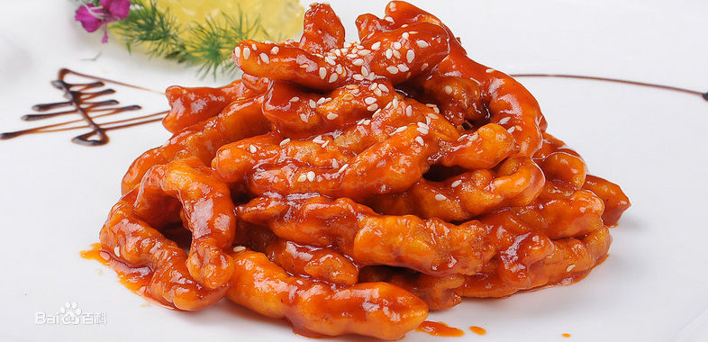
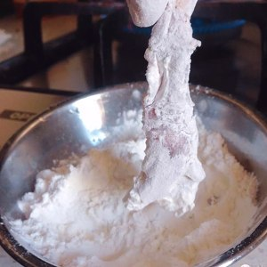
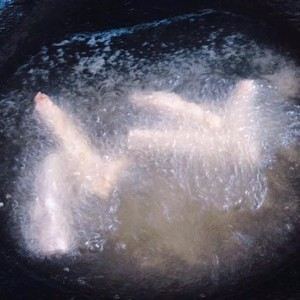
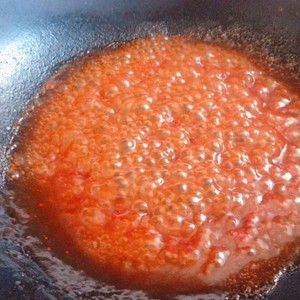
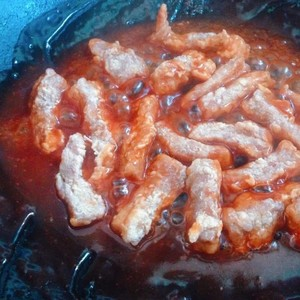
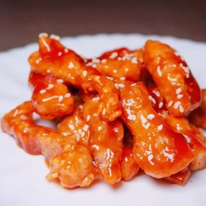

A recipe for Sweet and sour fillet of pork
Sweet and sour pork tenderloin is one of the classic han dishes.It is found in zhejiang cuisine, shandong cuisine, sichuan cuisine, cantonese cuisine, and huai cuisine.Sweet and sour pork tenderloin with pork tenderloin as the main material, with flour, starch, vinegar and other ingredients, sweet and sour delicious, let people appetite open.

The material prepared
Pork tenderloin 300 grams, eggs 1, ginger 3 grams, salt 3 grams, pepper 2 grams, flour right, sesame right, sweet and sour sauce, tomato sauce 20 grams, white vinegar 20 grams, sugar 10 grams, water 40 grams, starch water, flour 20 grams, water 20 grams
Production steps

Wash and slice the tenderloin. Add eggs, ginger, pepper and salt and marinate for 15 minutes.

After marinating, cover both sides of the tenderloin with cornflour and set aside for 3 minutes.

Heat up the oil and fry it until it changes color.

Add tomato sauce, sugar, water, vinegar, and starchy water and cook until bubbling and thickened. Remove from heat.

Pour in the tenderloin and stir-fry until smooth. Remove from the pan and sprinkle with sesame seeds.

Dish out.A sweet and sour tenderloin is ready!